Professional Project · 2023–2024
Hilton Hotel,
Kathmandu
From curved façade geometry to fabrication-ready components.
{kind=link}
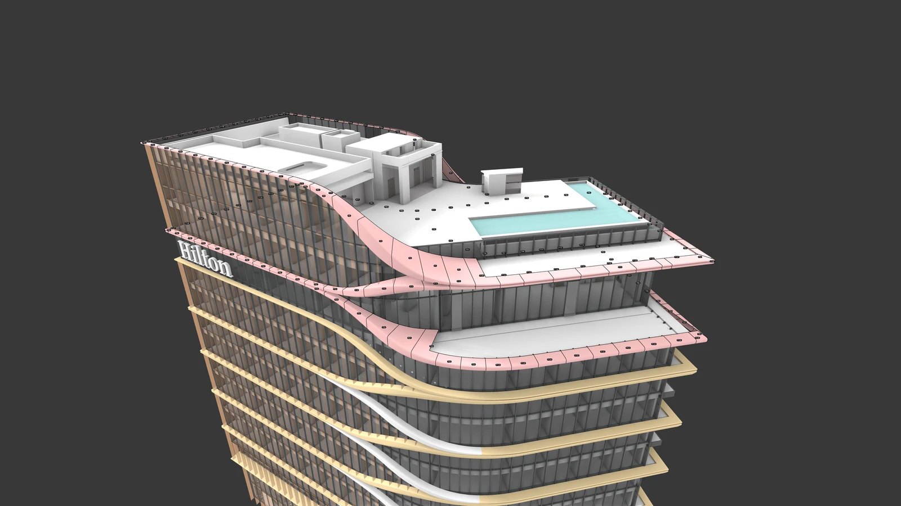
The Hilton façade is defined by curved GFRC scissor bands that cross and separate along a glazed curtain wall. My role at Studio Symbiosis was to make that expressive surface buildable: I rationalised the band geometry, coordinated it with the curtain-wall and steel support system, and produced the shop drawings, labels and mould profiles used to move from a continuous digital surface to discrete pieces for fabrication and installation.
The Design-to-Fabrication Question
Preserving continuity through discrete parts
How can a continuous, curved façade become a set of accurately drawn, transportable and installable components?
01 / A Continuous Façade
Resolving the scissor-band geometry
The architectural expression depends on bands that read as continuous curves across straight and curved regions of the elevation. Their changing depth and direction produce a family of related components, with repeated conditions on typical floors and distinct geometries at the entrance and all-day dining level.
Rationalisation makes this geometry buildable. The elevation drawing gives individual pieces an address within the larger façade, coordinating band profiles and component labels with floor levels. This establishes a link between the overall architectural surface and the pieces used to make it.
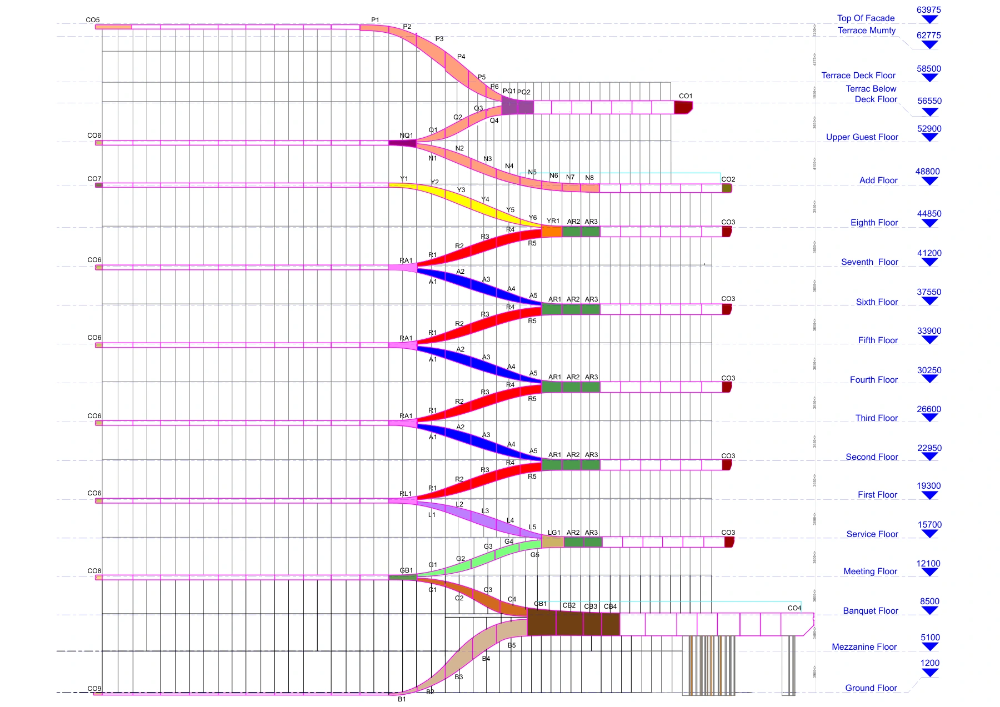
02 / Supporting the Bands
From the mullion to the GFRC surface
The portfolio documents a support sequence: cleats installed on the mullions, brackets installed in the cleats, and mild-steel pipe framing supporting the bracket arrangement. The GFRC bands are then installed on this steel framework.
The portfolio states that the mullions were structurally reinforced to support the dead load of the bands. Coordinating the geometry with this support system is therefore part of the façade workflow: the visible surface and the structure behind it must be resolved together.
{kind=link}
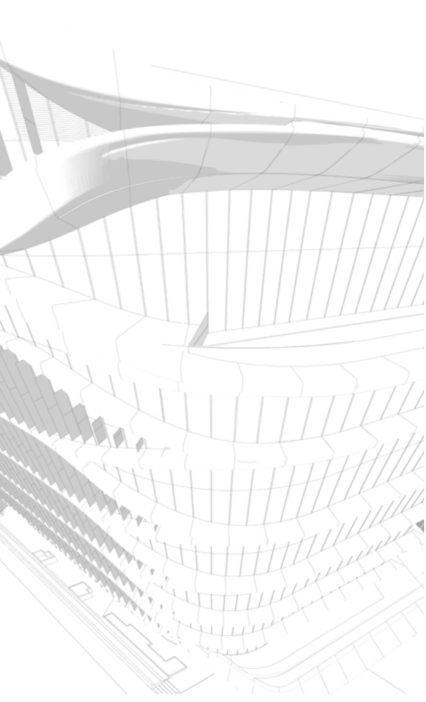
{kind=link}
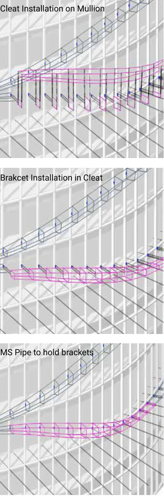
03 / Sectioning the Curved Surface
A shared geometric basis for shop drawings
Multiple perpendicular section planes are distributed along the curved surface of the typical-floor scissor bands. These planes provide a repeatable way to extract profiles from a changing three-dimensional form and divide the bands into sizes suitable for transport and installation.
The extracted sections guide the shop drawings and the relationship between neighbouring pieces. Their purpose is to maintain geometric continuity across component boundaries, so the assembled pieces follow the intended curve.
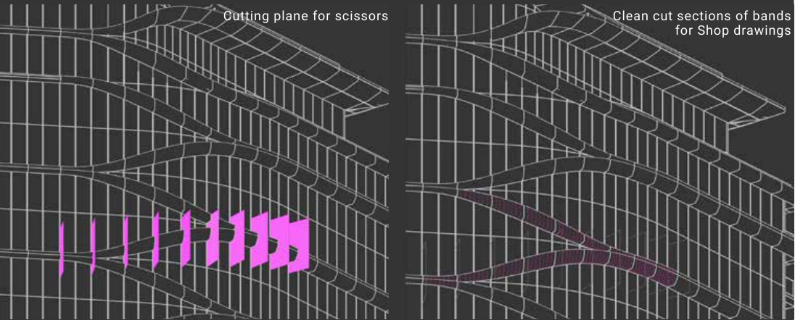
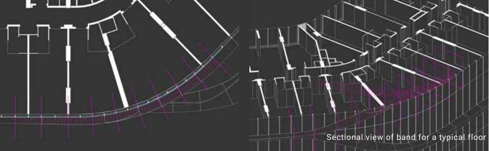
04 / Transportable Components
Handling the entrance and dining-level cantilevers
The entrance-lobby and all-day dining bands include cantilevers extending over 3 metres. The portfolio describes subdividing these bands into smaller sections to facilitate manual handling.
Each piece receives a unique label in the fabrication drawings, accompanied by isometric assembly diagrams. This creates a traceable connection between the drawing, the fabricated piece and its location in the assembly.
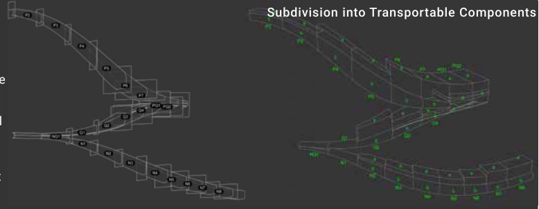
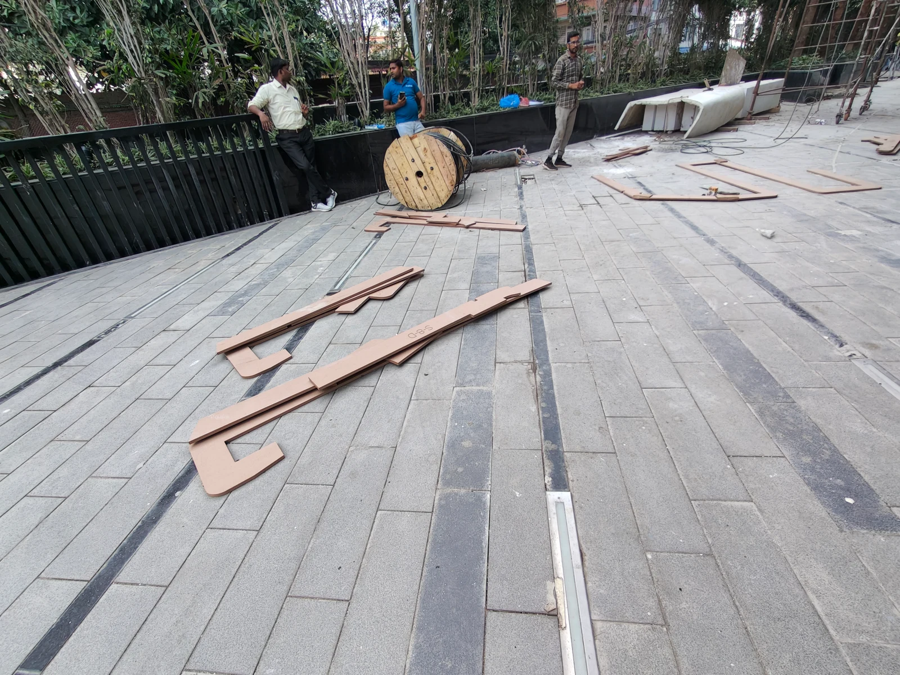
05 / CNC and Mould Frameworks
From flat sheets to a three-dimensional form
The fabrication workflow sections the bands in two directions at 150 mm spacing. The resulting profiles are nested onto 8 × 4 ft MDF sheets, 8 mm thick, preparing flat cutting information for CNC fabrication.
Interlocking grooves allow the cut sections to assemble into an aligned framework. This framework supports GRC/FRP mould preparation, translating the digital surface into a physical form through a series of repeatable two-dimensional cuts.
Typical-floor moulds are reused, while the remaining scissor bands require unique fabrication. The workflow therefore accommodates both repetition and variation within the same façade system.
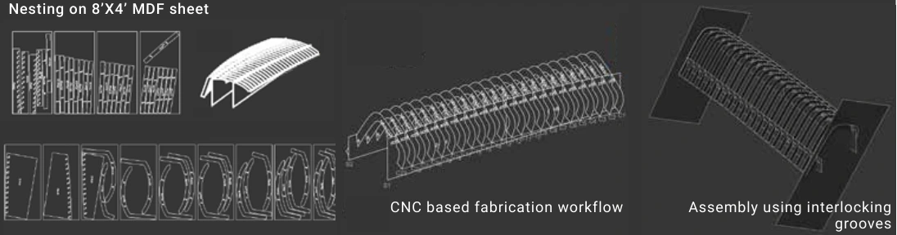
{kind=link}
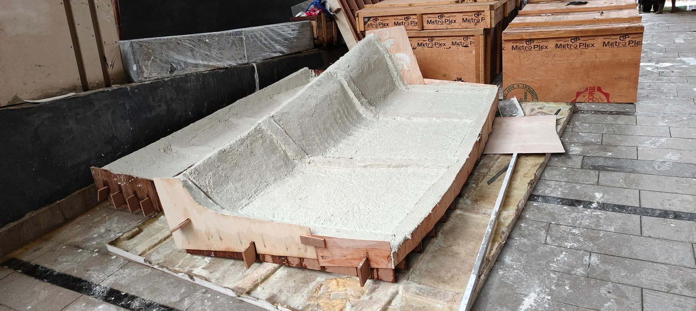
{kind=link}
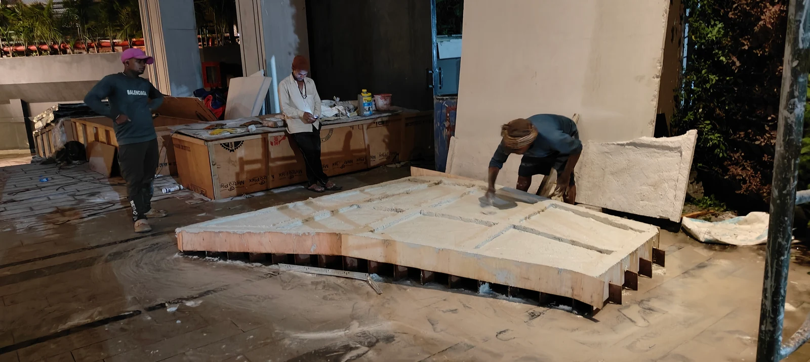
06 / From Fabrication to Installation
Reading the component system on site
The site photographs record the transition from individual pieces and moulds to the installed façade. At the curved edges, the support arrangement and segmented construction become visible before the bands read as a continuous architectural surface.
This closes the workflow described in the portfolio: the same band geometry is carried through section extraction, component identification, mould preparation and installation. The role of the computational model is to keep those stages coordinated.
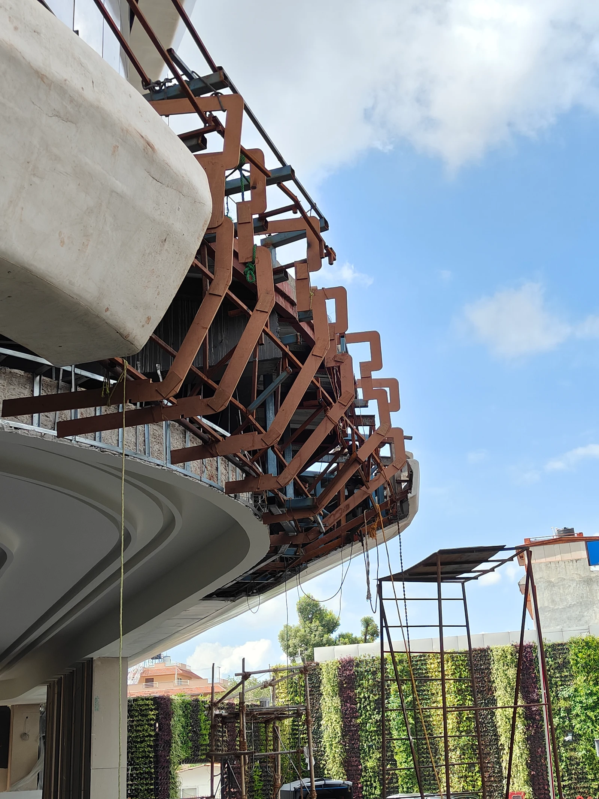
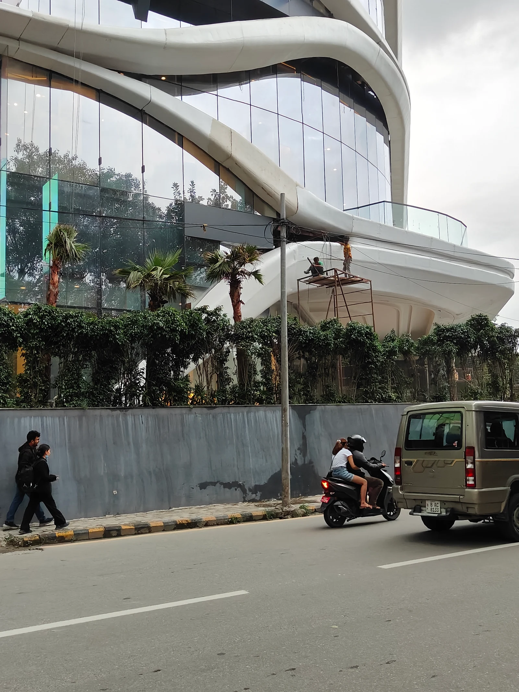
Reflection
The project demonstrates how computational design supports technical delivery. Section planes, component labels and CNC cutting information turn a complex surface into a coordinated set of instructions. My contribution focused on preserving the façade geometry while making it practical to draw, fabricate, handle and assemble.
Credits
Architectural project: Studio Symbiosis.
Team listed in the portfolio: Amit Gupta, Britta Knobbel and Naitik Sharma.
My contribution: façade rationalisation and shop drawing production.
Drawings, models and site photographs: supplied project documentation. Narrative based on Summer Portfolio — Naitik, pp. 3–6.